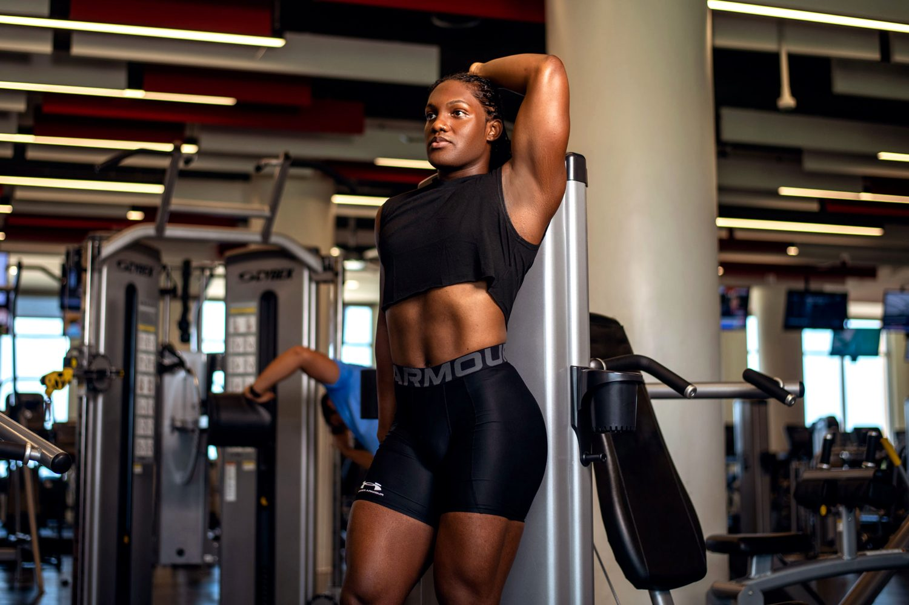
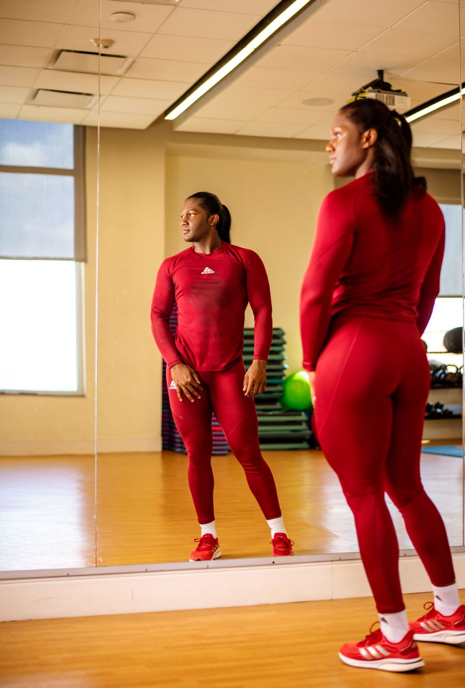
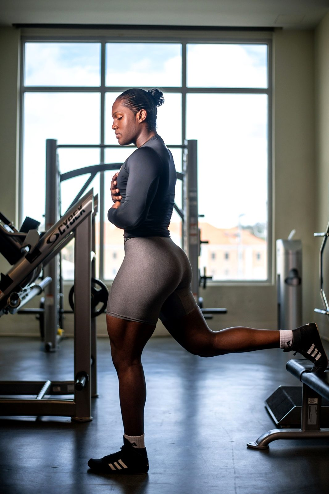
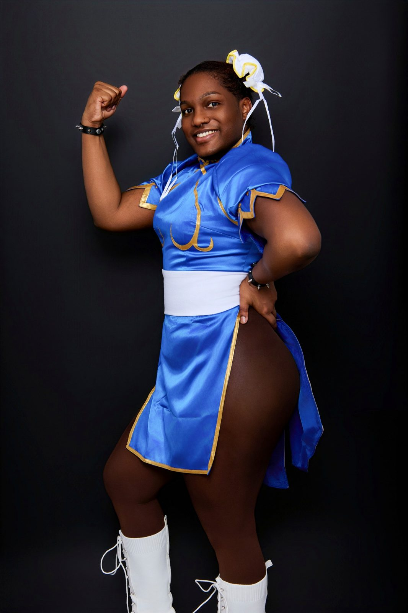
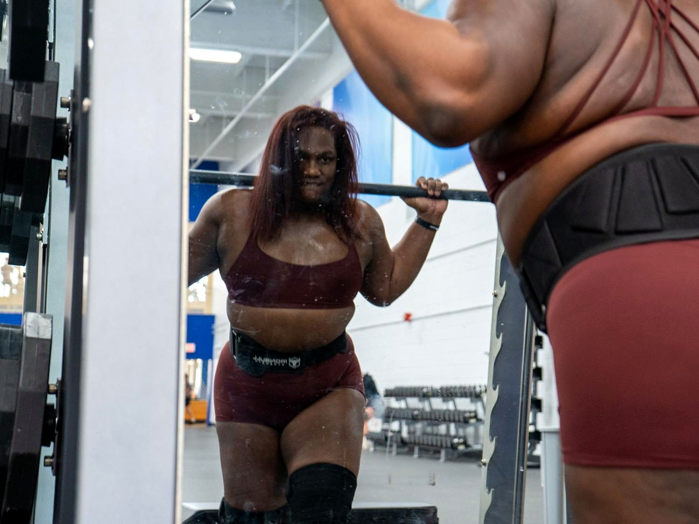
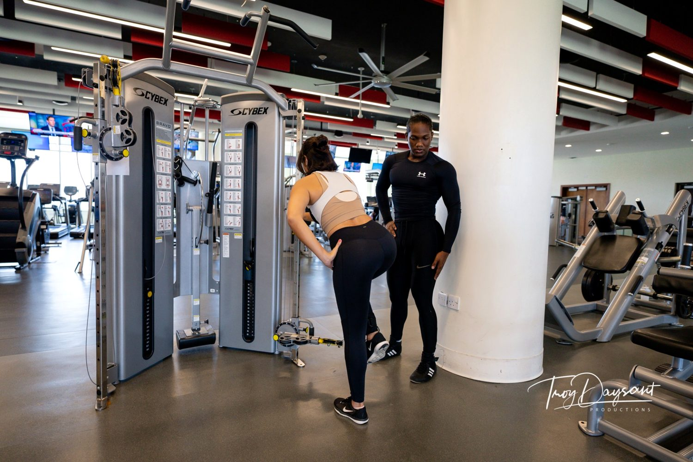
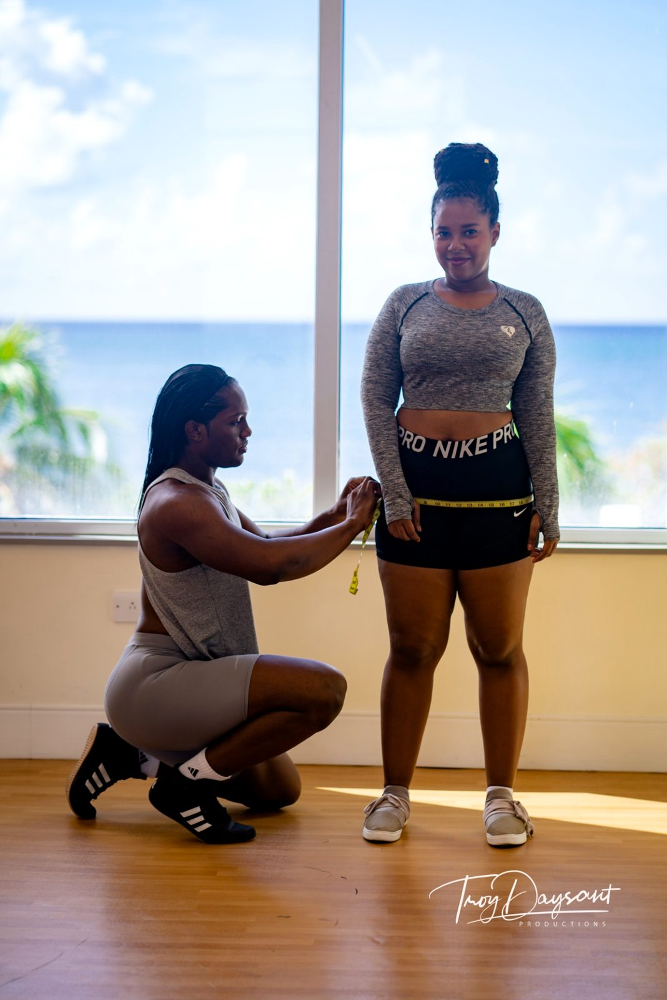
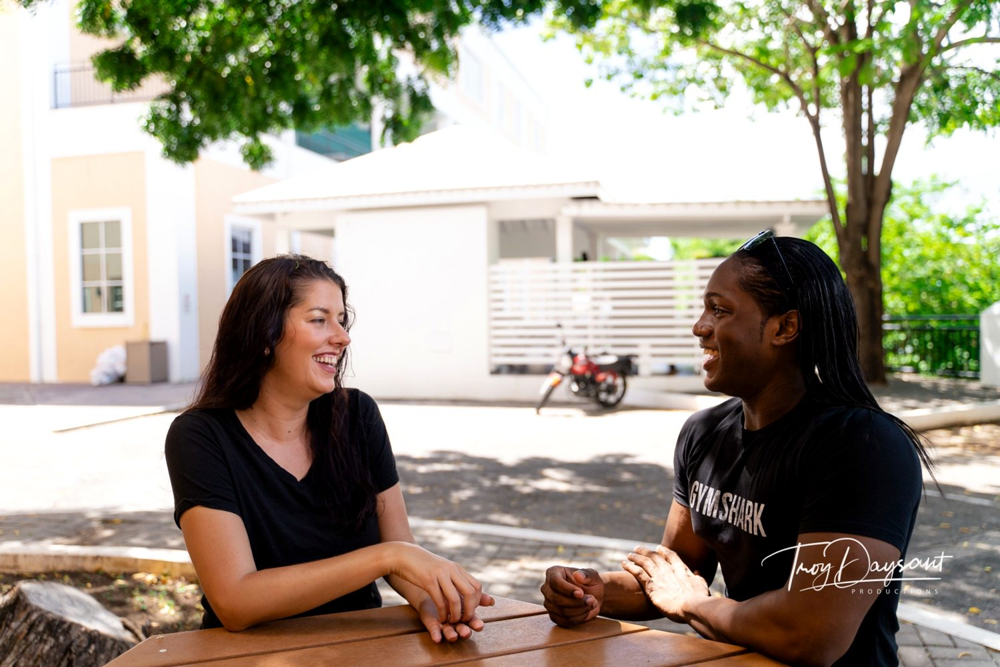
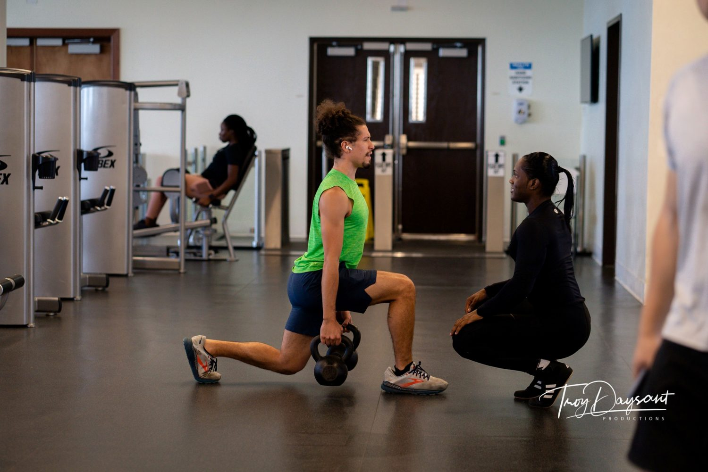

My Body as a Site of Becoming
My relationship with health, fitness, and wellness is inseparable from my ongoing process of becoming. I understand the body not simply as a physical entity to be trained, strengthened, or transformed, but as a site through which identity, knowledge, agency, and lived experience are continuously negotiated.

Movement as empowerment and advocacy.
My philosophy is grounded in empowerment and advocacy through a biopsychosocial model of practice. I approach fitness as an opportunity to cultivate agency, deepen self-understanding, and explore the possibilities of embodied transformation.
Rather than privileging a singular ideal of physical performance or appearance, I value the multiplicity of bodies, identities, abilities, and experiences through which people engage in movement and wellness.

Strength. Expression. Becoming.
Across powerbuilding, performance, and everyday movement, I understand physical practice as a way of exploring what the body can do and what it can mean.




Coaching the whole person.
For the past seven years, I have worked as a fitness and wellness coach, personal trainer, and group fitness instructor, supporting hundreds of clients with a wide range of goals.
My coaching practice centers individual agency, behavior change, movement confidence, and a holistic understanding of well-being. I aim to create environments where people can pursue their goals without being reduced to a single measure of appearance or performance.
Relationships at the center of practice.




Client photographs retain their original photographer credits where visible.
Evidence-informed practice.
My training spans personal training, group fitness, behavior change, and wellness coaching, connecting movement science with the social and psychological dimensions of health.
Becoming is never finished.
My scholarship, advocacy, and coaching are connected by an ongoing commitment to agency, embodiment, and possibility.
Documents & credentials
Explore my academic and professional experience in greater detail.